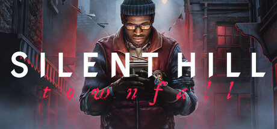
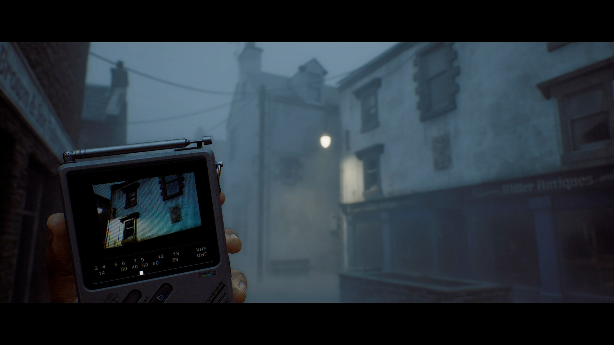
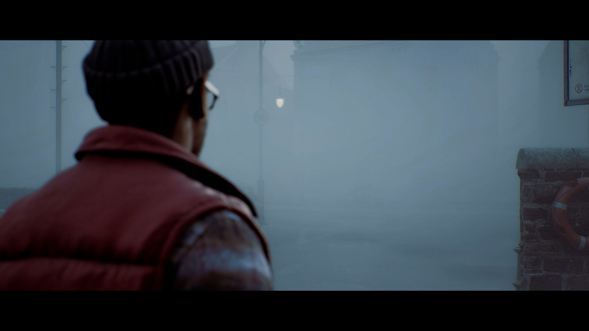
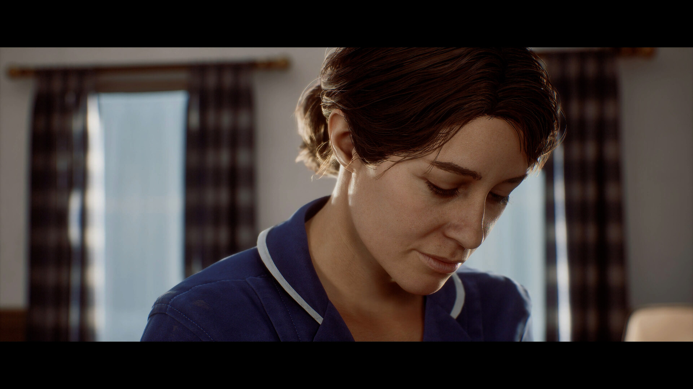

사일런트 힐 타운폴 사전구매 방법ㆍ가격 총정리, Silent Hill Townfall 코나미 신작 공포게임이 1인칭으로 돌아온 이유
주인장이 사일런트 힐 시리즈를 처음 만난 게 벌써 20년도 더 됐는데요, 그때 라디오에서 지지직거리는 잡음이 들리기 시작하면 심장이 쫄깃해지던 기억이 아직도 생생하거든요(?). 그 뒤로 시리즈 신작 소식이 뜨면 일단 눈길부터 가는 편인데, 최근 들어 '사일런트 힐: 타운폴(SILENT HILL: Townfall)' 이야기가 부쩍 자주 들리더라고요. 사담은 이쯤 하고, 오늘은 이 게임이 시리즈 팬들 사이에서 왜 이렇게 기대를 모으고 있는지, 그리고 사전구매는 어떻게 하면 되는지 정리해 드릴게요.
먼저 짚고 갈 게 있는데요, 이 글에서 다루는 '사전구매'는 모바일 게임에서 흔한 단계별 보상형 사전예약이 아닙니다. 타운폴은 콘솔ㆍPC 패키지 게임이라 현재 스팀과 플레이스테이션 스토어에서 정식 구매를 미리 진행하는 사전구매(pre-purchase) 방식이고요, 마감은 출시일인 9월 24일(목) 0시입니다. 시작은 코나미가 신작을 공식 발표한 2026년 6월 2일부터 이미 진행 중이고요, 오늘(9월 12일, 토) 기준으로 D-12 남았네요.

SILENT HILL: Townfall — 코나미ㆍ안나푸르나 인터랙티브 공동 배급 신작
이미지 출처: Steam — SILENT HILL: Townfall 스토어 페이지 · 네이버 본문엔 받아서 재업로드 권장
1. 사일런트 힐: 타운폴, 어떤 게임인가요?
사일런트 힐: 타운폴은 코나미(KONAMI)와 안나푸르나 인터랙티브(Annapurna Interactive)가 함께 배급하고, 스코틀랜드 글래스고에 자리한 인디 스튜디오 '스크린 번(Screen Burn)'이 개발한 사일런트 힐 시리즈의 신작입니다. 출시일은 2026년 9월 24일(목)이고, 플랫폼은 PS5ㆍSteam(PC)ㆍEpic Games Store예요.
경향게임즈 보도를 보면 이 작품을 시리즈의 최신작으로 소개하고 있던데요, 코나미 EU 발표 페이지 제목을 보면 '다음 단계의 심리적 공포가 시작된다(The Next Phase of Psychological Horror Begins)'는 식으로 뽑아놨더라고요 — 코나미는 US판과 EU판 발표 페이지를 따로 올렸는데, 이 문구는 그중 EU 페이지 쪽 헤드라인입니다. 오랜만에 나오는 시리즈 본가 신작이다 보니, 팬 커뮤니티에서는 이번 작품을 정통 후속작으로 부르는 분위기가 강한 것 같습니다.
2. 1인칭 심리공포로 전환
타운폴은 시리즈 최초로 전투부터 탐험까지 전 구간을 1인칭 시점으로 진행하는 사일런트 힐입니다.
PS 공식 발표에 따르면 시리즈를 상징하던 라디오 대신 이번엔 'CRTV'라는 휴대용 소형 TV 기기가 손에 들리는데요, 화면에 지지직거리는 잡음이 뜨면서 근처의 위협이나 퍼즐 단서를 알려주는 방식이라고 합니다 — 라디오가 하던 역할을 그대로 물려받은 셈이죠. 보시면 화면 속 손에 들린 기기가 바로 그 CRTV인데요, 1인칭으로 바뀌면서 전투도 훨씬 긴박해졌다고 합니다. 정면으로 맞서거나 도망치거나, 둘 중 하나를 골라야 하는 순간이 잦아졌다는 설명이 나오더라고요.

CRTV 기기로 주변을 살피는 1인칭 시점
이미지 출처: Steam — SILENT HILL: Townfall 스토어 페이지 · 네이버 본문엔 받아서 재업로드 권장
3. 무대는 스코틀랜드 '세인트 아멜리아'
타운폴의 배경은 스코틀랜드에서 영감을 받은 가상의 섬 마을 '세인트 아멜리아(St. Amelia)'입니다.
주인공 사이먼 오델이 '문제를 바로잡기 위해' 다시 찾아온 마을인데, 안개에 완전히 뒤덮여 있고 사람 흔적은 없는데도 뭔가는 깨어 있는 듯한 분위기로 소개되고 있더라고요. 눈에 띄는 대목은 이 배경이 미국이 아니라 스코틀랜드라는 점인데요, 개발사 스크린 번이 글래스고에 자리한 스튜디오라 자기 나라의 풍경과 안개를 직접 무대로 가져온 셈입니다. 인벤 기사에서도 이 배경이 스코틀랜드 동쪽 해안에서 영감을 받았다고 짚었더라고요. 시리즈 특유의 짙은 안개는 그대로 이어가면서 무대만 완전히 새로 그린 겁니다. 마을 간호사 조이(Zoe)와 얽힌 관계가 이야기의 중심 미스터리로 짚이고 있어서, 캐릭터 서사도 꽤 진하게 짜여 있는 모양이고요.

안개로 뒤덮인 세인트 아멜리아 거리
이미지 출처: Steam — SILENT HILL: Townfall 스토어 페이지 · 네이버 본문엔 받아서 재업로드 권장

마을 간호사 조이(Zoe)로 보이는 인물
이미지 출처: Steam — SILENT HILL: Townfall 스토어 페이지 · 네이버 본문엔 받아서 재업로드 권장
4. 사전구매 정보 한눈에 (표준ㆍ디지털 디럭스)
사일런트 힐: 타운폴은 9월 24일 PS5ㆍSteamㆍEpic Games Store로 출시되며, 스팀 기준 스탠다드 에디션은 ₩69,000ㆍ디지털 디럭스는 ₩80,000입니다. 세부 항목은 아래 표로 정리했어요.
| 항목 | 내용 |
|---|---|
| 출시일 | 2026년 9월 24일 (목) |
| 플랫폼 | PS5ㆍSteam(PC)ㆍEpic Games Store |
| 개발/배급 | Screen Burn 개발 / Annapurna Interactive+KONAMI 배급 |
| 스탠다드 에디션(Steam 국내가) | ₩69,000 |
| 디지털 디럭스(Steam 국내가) | ₩80,000 |
| 디럭스 구성 | 디지털 아트북+사운드트랙+사이먼 대체 의상+선행 플레이(48시간) |
| 언어 | 한국어 자막 지원 확인(Steam 지원 언어 목록 기준) |
코나미 공식 발표 페이지를 보면, 스탠다드 에디션에도 'CRTV 스타일: 러스티드'ㆍ'CRTV 스타일: 비치 에디션(PS5 전용)' 같은 사전구매 특전이 따로 붙어 있더라고요. 디지털 디럭스만 특별한 게 아니라 스탠다드 구매자도 챙길 게 있다는 뜻입니다. 참고로 이 작품엔 모바일 게임처럼 여러 단계를 채워야 받는 사전예약 보상 같은 건 따로 없고요, 대신 에디션별 구성으로 혜택이 갈리는 구조예요.
5. 사전구매는 어디서, 언제까지 하나요?
앞서 말씀드렸듯 사전구매는 스팀ㆍ플레이스테이션 스토어에서 바로 진행하면 되고, 마감은 9월 24일(목) 0시입니다.
스팀 사전구매 페이지에 들어가 보면 스탠다드ㆍ디지털 디럭스 두 에디션이 나란히 떠 있고 바로 구매 버튼을 누를 수 있게 돼 있습니다. 그런데 거기서 출시일을 보니 9월 23일로 떠 있어서 좀 헷갈렸는데요, 이건 스팀 자체 표기 차이로 보이고 정확한 사유는 공식적으로 확인되지 않았습니다. 코나미와 플레이스테이션 공식 발표 기준 출시일은 9월 24일이 맞으니, 실제 구매ㆍ플레이 시점은 24일 기준으로 잡으시면 됩니다.
디지털 디럭스를 구매하면 정식 출시보다 48시간 먼저 플레이할 수 있습니다. 시작 시점은 9월 22일(화)경으로 알려져 있어요.
자주 묻는 질문
Q. 한국어 더빙도 지원되나요?
스팀 상점의 지원 언어 목록에 한국어가 자막 기준으로 포함돼 있는 건 확인했는데요, 음성(더빙) 지원 여부는 이번 조사로는 확인하지 못했습니다. 정확한 건 출시 전 공식 공지를 다시 확인해 주세요.
Q. 국내 플레이스테이션 스토어 정가는 얼마인가요?
미국 플레이스테이션 스토어 기준으로는 스탠다드 $49.99ㆍ디럭스 $59.99인데, 국내 플레이스테이션 스토어 정가는 이번 조사에서 확인하지 못했습니다. 별도 공지가 필요한 부분이라 스토어에서 직접 확인해 보시는 게 정확합니다.
Q. 디지털 디럭스 선행 플레이는 정확히 언제 시작하나요?
정식 출시(9월 24일) 48시간 전으로 역산하면 9월 22일(화)경 시작될 걸로 보이는데, 코나미ㆍ플레이스테이션 어느 쪽도 정확한 시각(오전인지 오후인지, 한국시간 기준인지)까지는 아직 공식 공지하지 않았습니다. 참고로 이 선행 플레이는 스탠다드가 아닌 디지털 디럭스 구매자 한정 혜택이고요, 보통 이런 선행 플레이는 출시 하루 이틀 전에 시각까지 확정 공지되는 경우가 많아서 출시가 가까워지면 코나미ㆍ스팀 공식 채널에서 정확한 시각이 따로 안내될 걸로 보입니다.
처음에 던진 질문으로 돌아가 보면, 타운폴이 왜 이렇게 화제인지 답은 어느 정도 나온 것 같습니다. 코나미ㆍ안나푸르나 인터랙티브가 함께 배급하는 시리즈 신작이라는 무게감, 시리즈 최초의 전면 1인칭 전환, 그리고 개발진이 제 나라 스코틀랜드를 직접 무대로 그려낸 세인트 아멜리아까지 — 이 세 가지가 겹치면서 기대감이 쌓인 거더라고요. 주인장도 D-12 남은 동안 사전구매 버튼을 누를지 고민 중입니다(?). 정식 출시 소식은 또 정리해서 들고 올게요 :)
참고한 곳
· Steam — SILENT HILL: Townfall 사전구매 페이지
· KONAMI 공식(US) — SILENT HILL: Townfall 발표 페이지
· KONAMI 공식(EU) — SILENT HILL: Townfall 발표 페이지
· PlayStation Blog — Silent Hill: Townfall launches September 24 on PS5